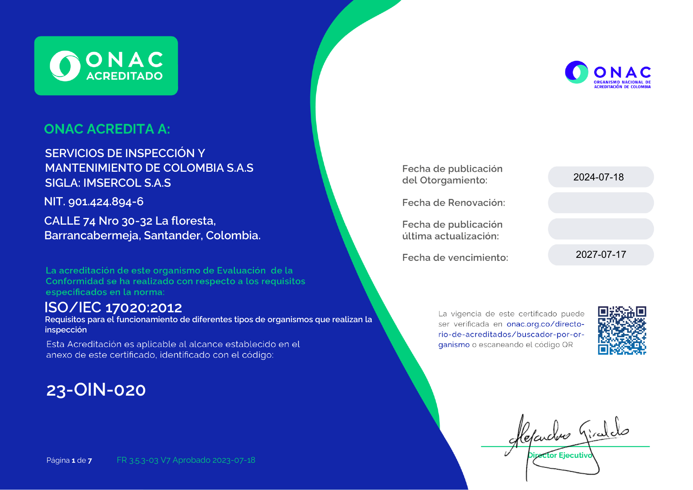
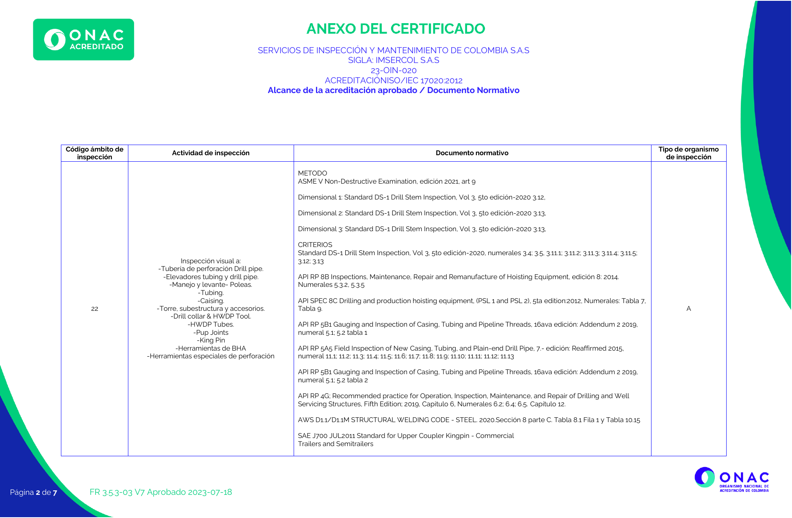
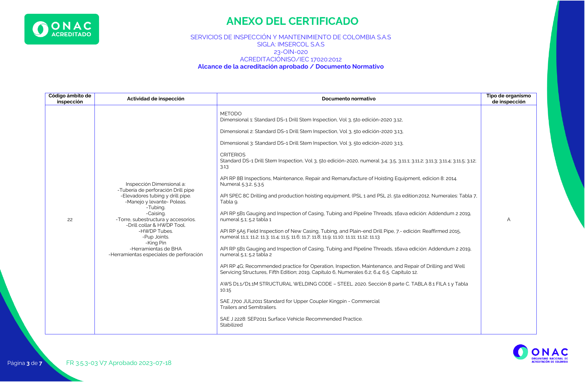
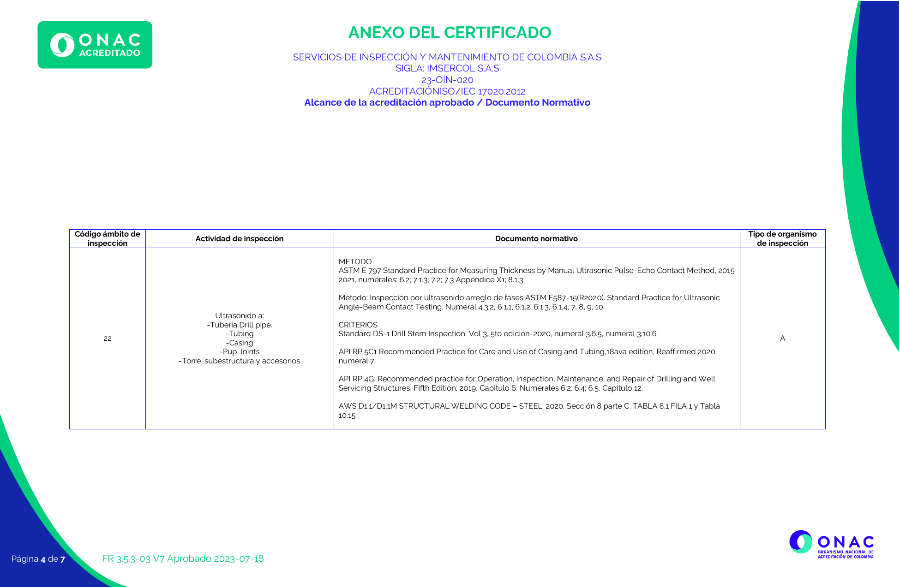
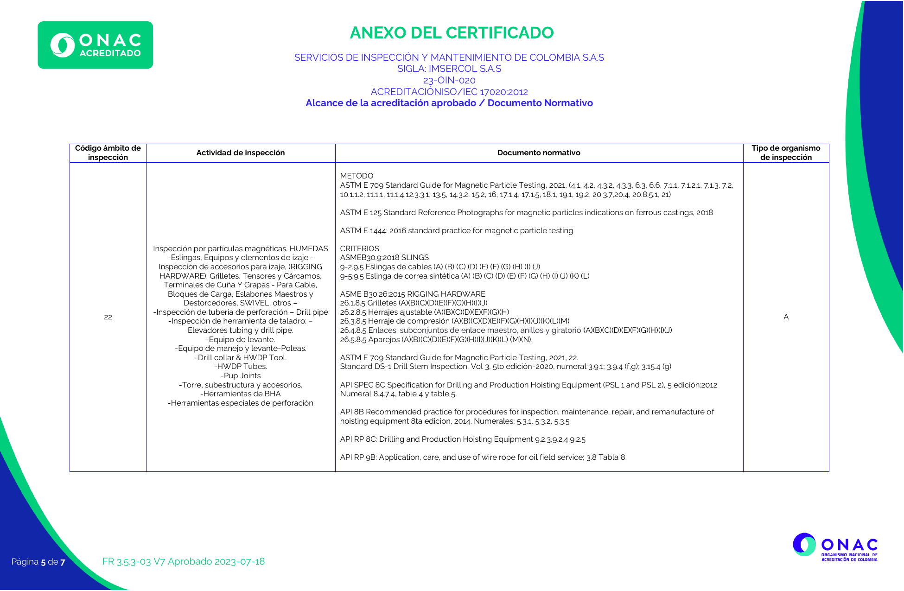
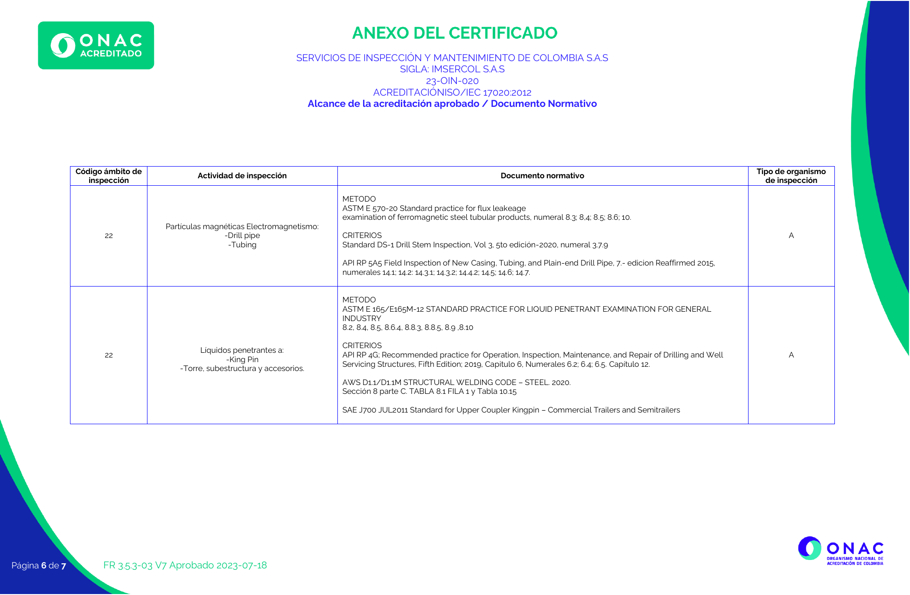

Cumplimiento tecnico
Acreditacion ONAC
IMSERCOL S.A.S. cuenta con acreditacion ONAC como Organismo de Inspeccion, codigo 23-OIN-020, bajo la norma ISO/IEC 17020:2012.
Uso correcto
La acreditacion aplica al alcance vigente
Nota legal y tecnica: la acreditacion aplica unicamente a las actividades incluidas en el alcance vigente del certificado. Los servicios no incluidos en dicho alcance se presentan como servicios complementarios.
Esta pagina no presenta a IMSERCOL con una certificacion empresarial general de ONAC ni indica que ONAC respalde cotizaciones, personas, productos o la totalidad de servicios de la compania.

Documentos de soporte
Certificado y paginas renderizadas
El PDF es la fuente de verificacion del alcance. Las imagenes renderizadas se incluyen como apoyo visual para revision interna.
Certificado ONAC 23-OIN-020 PDF
Documento oficial incluido en el paquete de referencia.
Descargar PDF{kind=link}
Portada del certificado
Vista renderizada de datos principales, vigencia, NIT, sede y norma.
Ver imagenAlcance acreditado
Resumen web con separacion entre servicios acreditados y complementarios.
Consultar alcance



